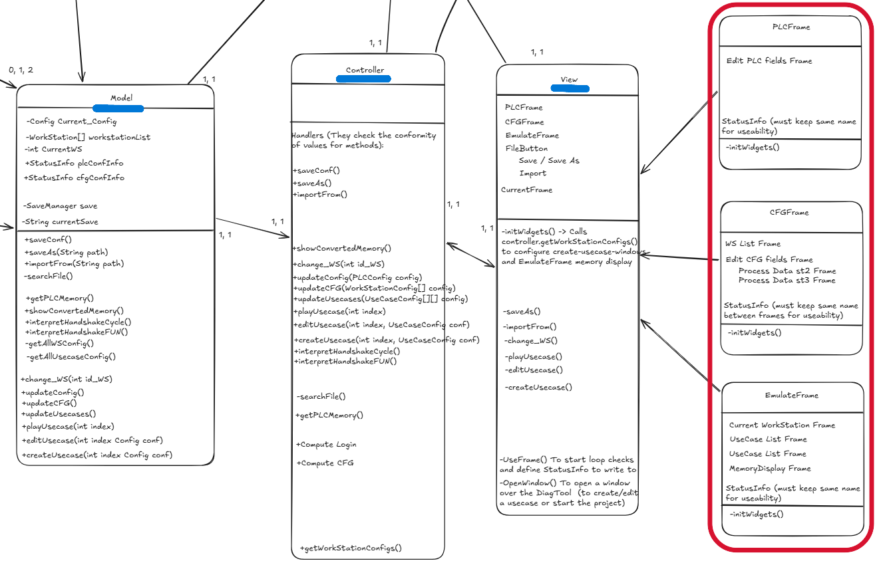
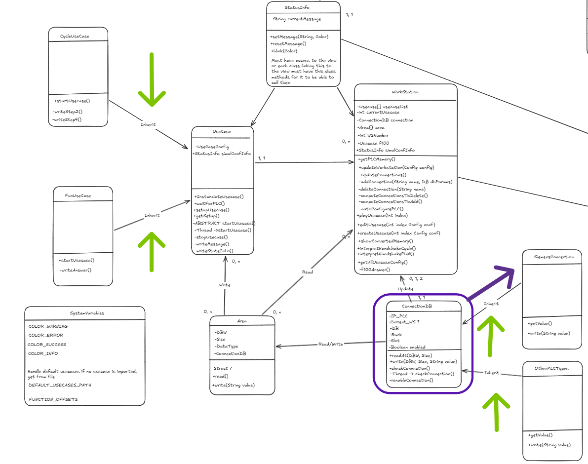

Démonstration des Compétences Techniques
Cette section présente les compétences acquises en développement d'applications à travers la conception et le développement de notre logiciel.
Sous-page : Conception Logicielle & Architecture Orientée Objet
- Concevoir l'architecture logicielle d'une application (MVC)
- Définir une hiérarchie de classes à responsabilité unique
- Modéliser les relations orientées objet par l'héritage
- Implémenter des patrons de conception (Design Patterns)


1. Descriptif général des traces et contexte
Les traces n°1 et n°2 montrent le diagramme de classes de l'application que j'ai développée pendant mon alternance. Ce logiciel sert à simuler des comportements et à tester la bonne implémentation des outils de traçabilité sur des automates programmables industriels, que l'on appelle des PLC (Programmable Logic Controller).
Dans mon projet, ce schéma montre la fin de la phase de conception technique. C'est le moment important où on passe des besoins du client à l'écriture du code. La trace n°1 donne une vue d'ensemble de l'architecture, et la trace n°2 fait un zoom sur le fonctionnement des objets, surtout pour la communication avec le matériel.
2. Analyse détaillée des savoir-faire mis en œuvre
Pour que le code soit facile à maintenir, j'ai pu concevoir l'architecture logicielle de l'application en utilisant le modèle architectural MVC (Modèle-Vue-Contrôleur). Comme on le voit avec les traits bleus sur la trace n°1, j'ai bien séparé la logique métier (`Model`), l'interface graphique (`View`) et la gestion des actions (`Controller`). Cette séparation permet par exemple de modifier l'affichage sans toucher au code qui traite les données.
Dans la même logique, j'ai fait attention à définir une hiérarchie de classes à responsabilité unique pour que le code reste propre. Pour l'interface graphique, au lieu de faire une seule grosse classe compliquée pour tous les écrans, j'ai créé une classe pour chaque fenêtre. L'encadré rouge de la trace n°1 montre bien ça : les fenêtres `PLCFrame` (pour modifier les paramètres de l'automate), `CFGFrame` (pour les configurations) et `EmulateFrame` (pour la simulation) sont bien séparées et ont chacune leur rôle.
Pour regrouper les éléments communs et éviter de recopier le même code, j'ai dû modéliser les relations orientées objet par l'héritage. Sur la trace n°2, les flèches vertes indiquent les liens d'héritage (`Inherit`). Par exemple, les classes pour les cas d'utilisation spécifiques (`CycleUseCase` et `FunUseCase`) héritent d'une classe mère commune appelée `UseCase`. Elles récupèrent ses variables et méthodes de base, tout en ajoutant leur propre comportement de calcul.
Enfin, pour que notre application fonctionne avec plusieurs types de matériels, j'ai été amené à implémenter des patrons de conception (Design Patterns). Comme le montre l'encadré violet de la trace n°2, j'ai conçu la classe `ConnectionDB` (ici, DB signifie Data Block, qui est un bloc de données dans un automate, et pas une base de données). Cette classe utilise le pattern *Adapter* (Adaptateur) : elle crée des méthodes standards pour lire et écrire (`readAt()`, `write()`) pour que l'application puisse communiquer de la même façon avec un automate Siemens (`SiemensConnection`) ou un autre modèle (`OtherPLCTypes`) qui hérite de cette base.
3. Auto-évaluation et bilan personnel
Contexte d'apprentissage et maîtrise : Concernant ces savoir-faire techniques, j'ai découvert ces concepts lors de ma formation. Ce projet m'a donc permi de pouvoir appliquer ces connaissances théoriques et de mieux comprendre leur utilité.
Difficultés rencontrées : Lors de la mise en pratique dans mon projet d'alternance, nous avons utilisé le langage Python, que je ne maitrisais que peu, j'ai donc du apprendre l'utilisation de l'orienté objet Python en autodidacte avec l'aide de documentations en ligne.
Évolution de mon niveau d'expertise : Avant cette expérience en entreprise, je pensais avoir un niveau moyen puisque je ne connaissais que la théorie. Aujourd'hui, grâce à ce travail de conception, je me situe plutôt à un niveau correcte car ce projet concret m'a permi de transformer ces savoirs en savoir-faire et d'affirmer mes connaissances avec une compréhension plus approfondie.